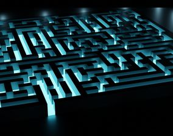
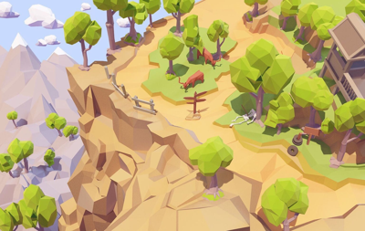
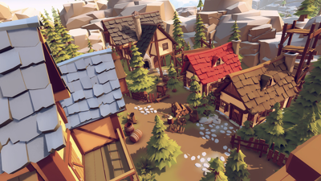
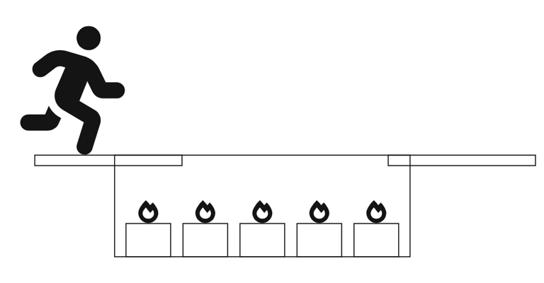
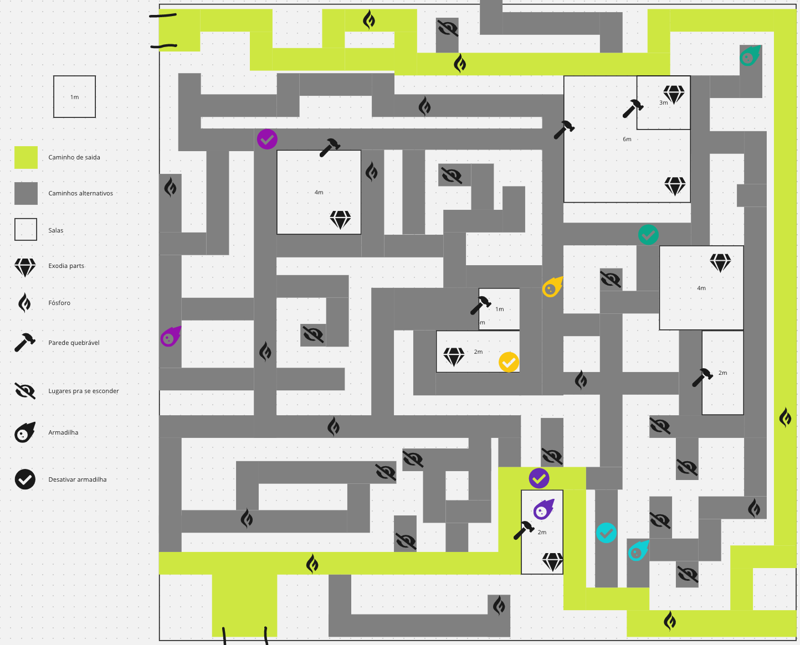
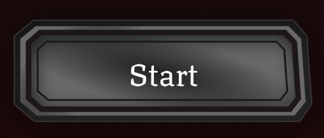
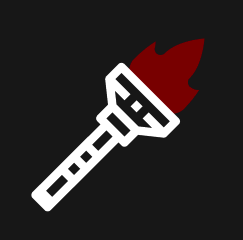
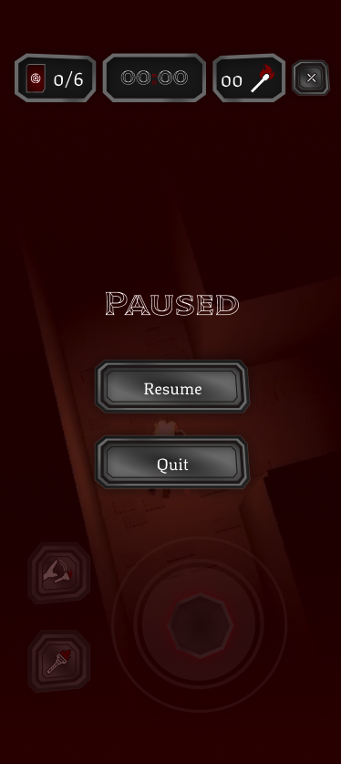

O jogo nasceu de um desafio de game jam gerado com o ChatGPT, com prazo de 31 de dezembro de 2023:
Tema
Fuga do Monstro
Descrição
O jogador está preso em um labirinto escuro e precisa escapar antes que o monstro o alcance. O monstro é letal, então é preciso se mover rápido e se esconder quando ele estiver perto. Os muitos caminhos e obstáculos do labirinto podem ser usados para bloquear o monstro e ajudar na fuga.
Regra
O jogo precisa ser criado para mobile.

Referência: um labirinto luminoso no escuro, o clima de luz contra a escuridão.

Referência low-poly: uma paisagem com penhascos, árvores e animais.

Referência low-poly: uma vila vista de cima.
Plataforma, público e estilo
Plataforma: mobile Android.
Jogadores: jogadores casuais que curtem jogos de perseguição de monstros com muita tensão, como Slender Man e Amnesia, e jogadores de roguelike que gostam de tentar de novo e de novo até vencer.
Estilo: um jogo de labirinto em visão top-down, com uma câmera próxima que muda de perspectiva em situações específicas (ao se esconder e quando o monstro te pega). Os jogadores só veem até onde a tocha ilumina, então luz e escuridão são o conceito central. Os assets seguem um estilo de arte low-poly.
História, criada com IA
Usamos o ChatGPT para rascunhar o esqueleto da história e depois fizemos a curadoria. Cada prompt gerou uma versão, e as nossas decisões entre uma rodada e outra moldaram o jogo.
Prompt 1 · Teseu
Um jovem aventureiro, Teseu, entra em um antigo labirinto com uma tocha, foge do Minotauro e escapa arremessando nele uma pedra amarrada a uma corda.
Decisão: rebatizamos o herói como Alex.
Prompt 2 · Alex
Alex é perseguido por corredores cada vez mais escuros, joga a tocha contra uma parede frágil para abrir uma passagem secreta e acaba de frente com o monstro.
Decisão: o monstro já está solto no labirinto.
Prompt 3 · Perseguido
Com o Minotauro já solto, Alex precisa manter a tocha acesa para ver o caminho e evitar armadilhas enquanto o monstro o caça sem descanso.
História final. Alex, um jovem aventureiro, ouve falar de um antigo labirinto no centro da cidade de onde ninguém jamais voltou. Ele entra com uma tocha. O ar fica úmido, as paredes se erguem e um rugido ecoa: um monstro gigante, parecido com um touro, de garras afiadas e olhos em chamas, o está caçando. Em um beco sem saída, ele joga a tocha contra uma parede frágil e foge por uma passagem secreta, correndo em direção à luz do sol. Na saída, uma corda amarrada a uma pedra pesada nocauteia o Minotauro. Ele sai com a tocha ainda acesa, sabendo que a experiência o tornará mais corajoso.
A partir dessa história criamos os personagens, as mecânicas e o estilo do jogo.
Personagens
Jogador
Alex, o aventureiro
Cerca de 25 anos, magro mas surpreendentemente forte, de cabelo castanho e barba por fazer. Um amante de emoções fortes, rápido e que nunca desiste. Ele entra no labirinto mal equipado, armado apenas com uma tocha, então a criatividade é sua verdadeira ferramenta.
Inimigo
O Minotauro
Uma fera massiva e musculosa, vermelha e parecida com um touro, com uma expressão permanente de raiva, mãos humanas maiores que o normal, pernas de boi, um machado enorme e olhos negros penetrantes. Sua visão é ruim na escuridão constante, então ele memorizou o labirinto inteiro como um mapa mental.
Aliado · Em desenvolvimento
Exodia (nome provisório)
A fera fragmentada da luz, inspirada no Exodia de Yu-Gi-Oh: o jogador o invoca ao coletar 6 cartas. O arqui-inimigo do Minotauro e a única coisa capaz de detê-lo de vez e abrir caminho até a saída. Um contador acompanha as cartas coletadas.
Gameplay
Movimentação
O jogador se move com um direcional (D-pad). O personagem sempre olha para a frente e não pode andar de costas. A câmera top-down acompanha e gira junto com o personagem, de modo que o caminho escolhido seja sempre “para a frente”. A tocha ilumina tudo o que o jogador pode ver.
A tocha é o jogo inteiro
Apagar a tocha
Esconda-se de um Minotauro próximo, ao preço de quase toda a visibilidade.
Acender a tocha
Veja para onde está indo, mas fique visível para o Minotauro. Custa um fósforo.
Arremessar a tocha
Atraia o Minotauro: jogue-a por um dos lados de uma bifurcação e corra para o outro, e o monstro segue a luz e perde você. Ela também quebra paredes frágeis.
Pegar a tocha
Fixa a luz no personagem novamente.
IA do inimigo
O Minotauro é uma máquina de estados, projetada para que a perseguição pareça justa e tensa.
EstadoOcioso
→
EstadoPatrulhandoalvo inteligente ou aleatório
→
Jogador encontradoRugidopausa no lugar
→
EstadoPerseguindo
→
EstadoAtacandocâmera lateral + quick-time event
→
EstadoAtordoado10 segundos
→
EstadoOcioso
Se o Minotauro perder o jogador de vista durante a perseguição, ele volta a Patrulhando. Se nunca encontrar o jogador, continua patrulhando.
Ocioso. O estado básico de descanso do Minotauro.
Patrulhando. A patrulha “inteligente” mantém o jogo interessante. Ele caminha até um ponto totalmente aleatório do labirinto ou até um ponto a 20 unidades do jogador. Ao chegar, escolhe um novo ponto, então a patrulha alterna entre inteligente e aleatória. Um ponto precisa ser alcançável para ser válido.
Perseguindo. Ele vai atrás do jogador, que pode se esconder em esconderijos, arremessar a tocha ou apagá-la. Alcançar o jogador dispara um ataque.
Atacando. Quando o jogador está ao alcance, a câmera muda para uma visão lateral e os controles de movimento são desativados. O jogador precisa tocar nos pontos certos da tela para escapar. Se conseguir, o Minotauro fica atordoado.
Atordoado. Ele para por 10 segundos. Enquanto isso, Alex corre aleatoriamente pelo labirinto, fora do controle do jogador, e uma luz mostra o caminho até a saída.
Vitória e derrota, contadores
Vitória
Encontrar a saída do labirinto ou encontrar as 6 cartas do Exodia.
Derrota
O Minotauro pega o Alex: um quick-time event dá uma chance de desviar tocando onde for indicado. Falhar é Game Over. Ter sucesso revela o caminho da saída com uma luz, e Alex corre aleatoriamente enquanto o Minotauro está atordoado. Uma armadilha: cair em uma delas é Game Over.
Contadores
Fósforos: diminuem conforme são usados. Cartas: coletadas de um total de 6. Tempo: avança enquanto se procura a saída.
Level design
O labirinto, com todas as suas interações, está montado no board do Miro do projeto (veja o link no topo).
Coletáveis
Cartas (6): coletar todas invoca o Exodia. Fósforos (14): espalhados pelo labirinto e usados para reacender a tocha, de modo que o jogador sempre precise decidir quando a luz vale o custo.
Armadilhas
Só o Alex é afetado; o Minotauro é imune. Armadilhas de parede: espinhos saem das paredes. Armadilhas de chão: o chão se abre sobre um poço de fogo. Desarmar armadilhas ainda está por definir.

Armadilha de chão: o chão se abre e revela um poço de fogo sob o Alex.

Mapa anotado do labirinto, do board do Miro: caminho de saída, caminhos alternativos, salas, partes do Exodia, fósforos, paredes quebráveis, esconderijos, armadilhas e botões para desativá-las.Mapa do labirinto. O protótipo jogável usa este layout: jogar.
Interface do usuário
Interações do labirinto
Desativar armadilhas
Encontre o botão da mesma cor do fogo ou dos espinhos para desativar a armadilha.
Paredes quebráveis
Paredes que o jogador pode quebrar jogando a tocha contra elas.
Esconderijos
Lugares com uma névoa roxa misteriosa onde nem o Minotauro ousa pisar. O jogador pode se esconder ali com a tocha acesa.
Estilo e elementos
Uma UI semi-realista e pesada, de pedra e energia, embora a experiência em si deva ser simples. A tipografia deve lembrar da Idade Média à Grécia antiga: leve, serifada, fácil de ler em elementos pequenos e muito estruturada em outros, para complementar o estilo low-poly. Tilt Prism é usada em títulos e textos grandes e Texturina em textos pequenos e botões.
Botões
Os botões têm ângulos agudos e cantos irregulares para parecerem botões de pedra, com bordas que simulam um movimento para dentro e para baixo quando ativos.

Exemplo de botão: ângulos agudos e cantos irregulares, como um botão de pedra.
D-pad
O D-pad lembra um losango sobre uma base de energia transparente. Ao se mover, um halo vermelho aparece na direção do movimento.
Exemplo de D-pad: um losango sobre uma base de energia transparente, com um halo vermelho na direção do movimento.
Ícones
Para serem legíveis e se destacarem dos elementos escuros da UI, os ícones são simples e não lembram o estilo realista do resto da UI.

Exemplo de ícone: a tocha, simples e legível sobre a UI escura.
Painéis
Os painéis de informação lembram o estilo dos botões, mas são claramente não interativos e puramente informativos.
Painéis de contadores, só informativos, ao lado do botão de pausa.
Menus e indicadores
Os menus são simples, com interações óbvias e texto claro sobre o que o jogador está fazendo, sobre um gradiente vermelho escuro que reforça o clima. Quando o Minotauro está perto, uma vinheta vermelha vibrante sobre a tela toda mostra sua direção, com pistas sonoras: respiração do Minotauro, passos e um som de desespero.

Menu de pausa: interações simples e óbvias sobre um gradiente vermelho escuro.